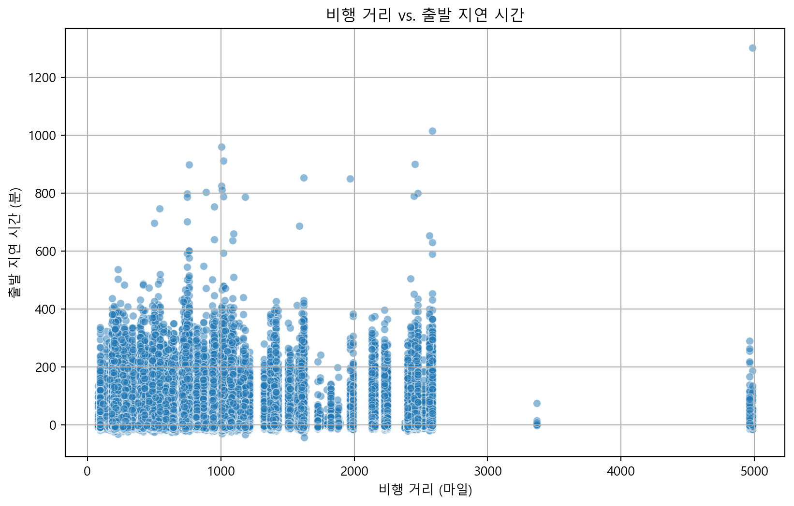

<class 'pandas.core.frame.DataFrame'>
RangeIndex: 273853 entries, 0 to 273852
Data columns (total 24 columns):
# Column Non-Null Count Dtype
--- ------ -------------- -----
0 year 273853 non-null int64
1 month 273853 non-null int64
2 day 273853 non-null int64
3 dep_time 273853 non-null float64
4 dep_delay 273853 non-null float64
5 arr_time 273853 non-null float64
6 sched_arr_time 273853 non-null int64
7 arr_delay 273853 non-null float64
8 carrier 273853 non-null object
9 flight 273853 non-null int64
10 tailnum 273853 non-null object
11 origin 273853 non-null object
12 dest 273853 non-null object
13 air_time 273853 non-null float64
14 distance 273853 non-null int64
15 sched_dep_hour 273853 non-null int64
16 sched_dep_minute 273853 non-null int64
17 man_year 273853 non-null float64
18 type 273853 non-null object
19 manufacturer 273853 non-null object
20 model 273853 non-null object
21 engines 273853 non-null int64
22 seats 273853 non-null int64
23 engine 273853 non-null object
dtypes: float64(6), int64(10), object(8)
memory usage: 50.1+ MB<class 'pandas.core.frame.DataFrame'>
RangeIndex: 273853 entries, 0 to 273852
Data columns (total 26 columns):
# Column Non-Null Count Dtype
--- ------ -------------- -----
0 year 273853 non-null int64
1 month 273853 non-null int64
2 day 273853 non-null int64
3 dep_time 273853 non-null float64
4 dep_delay 273853 non-null float64
5 arr_time 273853 non-null float64
6 sched_arr_time 273853 non-null int64
7 arr_delay 273853 non-null float64
8 carrier 273853 non-null object
9 flight 273853 non-null int64
10 tailnum 273853 non-null object
11 origin 273853 non-null object
12 dest 273853 non-null object
13 air_time 273853 non-null float64
14 distance 273853 non-null int64
15 sched_dep_hour 273853 non-null int64
16 sched_dep_minute 273853 non-null int64
17 man_year 273853 non-null float64
18 type 273853 non-null object
19 manufacturer 273853 non-null object
20 model 273853 non-null object
21 engines 273853 non-null int64
22 seats 273853 non-null int64
23 engine 273853 non-null object
24 date 273853 non-null datetime64[ns]
25 day_of_week 273853 non-null int32
dtypes: datetime64[ns](1), float64(6), int32(1), int64(10), object(8)
memory usage: 53.3+ MB
